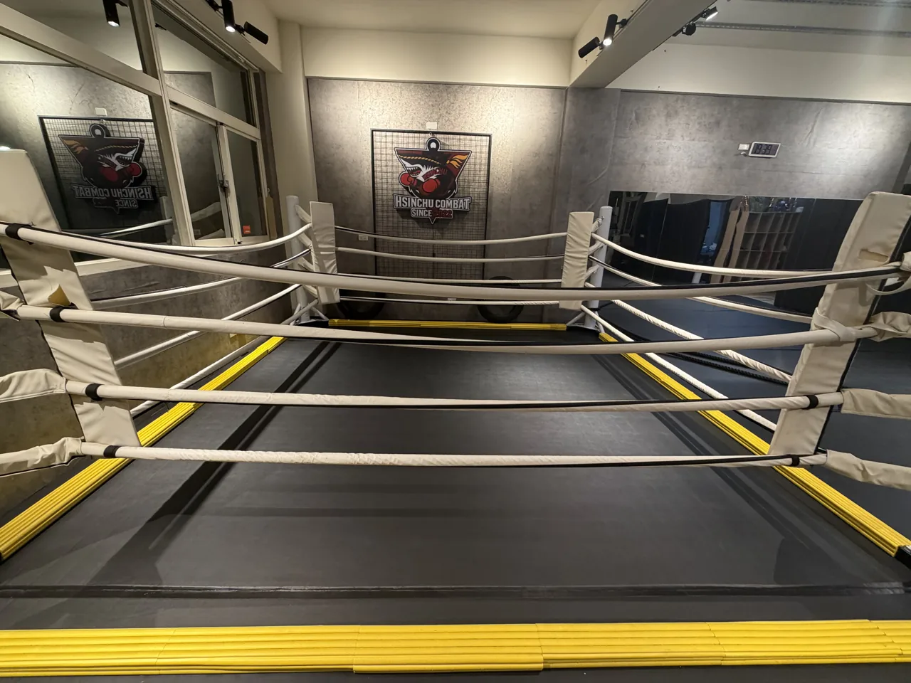

新竹白天學泰拳日間私人課與輪班族預約指南
想在新竹白天學泰拳或配合輪班時間運動，先了解 HCF 平日 11 點到 16 點的私人課預約方式。整理可約時段、零基礎需求、一對一與一對二體驗費用，以及送出表單後的確認流程。
白天可以詢問哪些時段
HCF 官網最新課表列出平日 11:00 至 16:00 的彈性私教預約時段。如果晚上要工作、休假日落在平日，或希望在接送與工作之間安排運動，可以先提出方便時間。此資訊於 2026 年 11 月 26 日核對，空檔會隨預約而改變。
| 你的時間 | 可以怎麼詢問 |
|---|---|
| 平日 11 點到 16 點 | 提出一對一或一對二私人課需求 由教練確認空檔 |
| 上午 11 點以前 | 目前不在公告的日間私課區間 請先詢問 不要直接到館 |
| 只有平日晚上方便 | 查看最新團課課表 或另外詢問私人課時段 |
| 每週輪班不同 | 先提供當週兩到三個可選時間 再確認能否安排 |
手機可左右滑動查看完整表格
營業時間與教練可約時間是不同的資訊。即使人在新竹、當下有空，也要先完成確認。若主要想安排晚上上課，可接著看下班學泰拳的安排指南。
輪班族先把可上課時間寫具體
與其只填白天都可以，更容易安排的方法是列出日期、可到館時間，以及最晚必須離開的時間。也可以說明班表何時才會確定，讓雙方知道何時適合再聯絡。
- 列出替代時段 例如週二或週四 13 點至 15 點之間可到館 並註明實際日期
- 預留交通與報到 一堂 60 分鐘之外 還需要到館與離館的時間 第一次請預留提早 10 到 15 分鐘報到
- 先說明是否固定 本週休假可以到 不一定代表以後每週相同時段都方便
- 確認改約方式 輪班可能變動時 先問清楚私人課取消與改約規則
不要把夜班結束後的空檔直接當作一定適合上課的時間。先把休息、交通與目前精神狀況納入考量，再和教練討論能持續配合的安排。
白天私人課也可以從零基礎開始
預約時直接說明沒有泰拳經驗，並寫下一個最想學清楚的問題，例如站架、基本直拳或如何聽懂打靶口令。由教練了解你的狀況，再確認第一堂的內容與節奏。
一對一適合集中討論自己的學習需求；兩人想一起來，可以詢問一對二，但要一起確認時間、程度與目標。私人課也不等於必須實戰對打，若只想先學基本動作，請在表單中說清楚。可先閱讀私人課程介紹或兩人同行私人課指南。
日間私課體驗費用怎麼看
HCF 目前公告的一對一體驗為一人一堂 60 分鐘 NT$1,400，一對二體驗為兩人一起一堂 60 分鐘 合計 NT$2,400。另外，一對一深度體驗是同一人兩堂，每堂 60 分鐘，合計 NT$2,400。
這裡列的是官網體驗價格，不是另有折扣的日間方案，也不是後續所有私人課的單堂價格。請先確認體驗資格、人數與可約日期，最新條件以價目表及館方確認為準。想一起比較團課與月方案，可看新竹泰拳費用整理。
把這些資訊放進第一堂體驗表單
從本頁的體驗按鈕進入表單，會帶入私人課詢問偏好。時段可以選擇白天，或時間不固定需討論，再補上具體可到館時間。
在讓教練更了解我填寫訓練目的細項，也回答「你一個禮拜願意花幾天在這項運動上」。以下是填寫示例，並非已開放預訂的課堂。
我輪班 本週二或週四 13 點至 15 點方便 我是零基礎 每週願意安排一天 希望先學清楚站架和基本拳腿 請協助確認可約日期
若每週能投入的天數還不確定，可先看泰拳一週練幾次的安排方式，從真正能出席的時間開始規劃。
收到確認後再到館
HCF 新竹格鬥地址為新竹市北區林森路 301 號 2 樓。送出體驗需求後，依畫面到官方 LINE 確認並傳送內容，再由教練核對日期、時間與費用。收到教練確認才完成預約，不是填完表單就能直接到館。
第一次穿方便活動的服裝，帶水與毛巾。裝備借用或租借及費用請在預約時確認，先不用為了體驗急著買齊拳套。更多準備事項可看第一次學泰拳要準備什麼。

常見問題
白天有固定團體泰拳課嗎
目前公告的平日 11 點到 16 點為彈性私人課預約時段，不能視為固定日間團課。若希望參加團體課，請先查看最新課表並確認開課。
輪班時間每週不同也能詢問嗎
可以。請列出實際日期與兩到三個方便時段，也說明班表何時確定，由教練確認可否配合。私人課仍需要雙方約定時間。
兩個人可以一起約白天私人課嗎
可以提出一對二需求。請一併提供兩人的經驗、目標與共同時間，再由教練確認。目前一對二體驗為一堂 60 分鐘，兩人合計 NT$2,400。
填完體驗表單就算預約完成嗎
還需要依畫面到官方 LINE 確認並傳送內容，等教練核對日期、課程與費用。收到確認後再到館。
延伸閱讀
把你方便的白天時段告訴教練
先提出日期 經驗與訓練目的 再確認第一堂體驗
課程資訊核對於 2026 年 11 月 26 日 查看最新價目表 可約時段與預約方式由教練確認